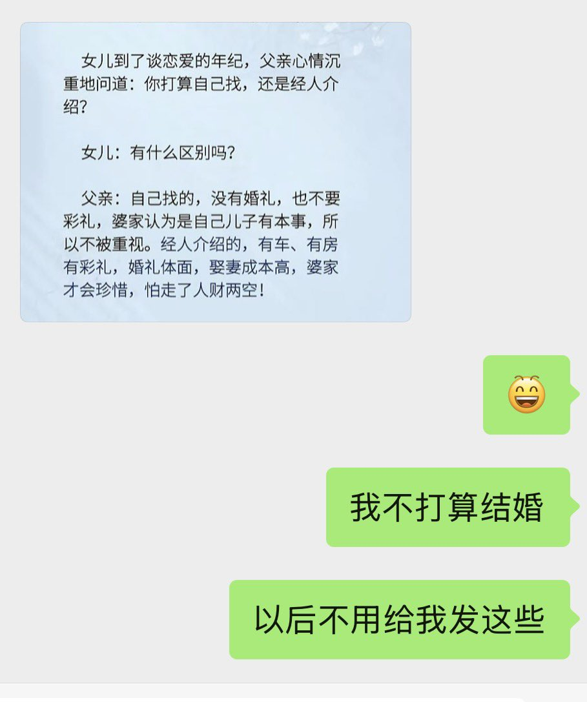

Dalin
@ZhiJiang0624
@pu_xin68339 我说我不想找女朋友生小孩我家里还说我说傻话
我自己都还养不好，我哪来的资格去承担那些责任？
我不想我为了我一时的欲望刺激就带着一个新生命来世界上受苦，正如我的曾经

林达
@pu_xin68339
我只谈，但是我不打算结婚，因为我不喜欢小孩，也觉得没有任何一个男人值得我去为他生孩子。
我爸：为什么不打算结婚
我：为什么要结婚
我爸：不结婚以后老了没人理你
我：年轻赚了钱人老了去养老院
我爸：你没有孩子在养老院护工会欺负你，有孩子的话他不敢欺负你
呵呵 https://t.co/j0bicCpKE4